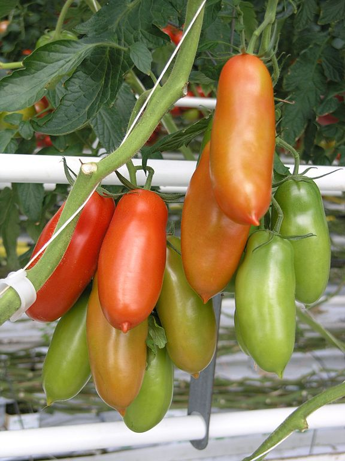

Tomato varieties
-
Better BoyA Better Boy tomato is approximately 12 oz.
-
San MarzanoSan Marzano tomato is a variety of plum tomato.
-
Green ZebraGreen Zebra is a tomato cultivar with dark green and yellow stripes.
-
Great WhiteLow yield of large pale yellow beefsteak tomatoes. Average flavor.
-
Santorini
 The Santorini is a cherry tomato native to Santorini, Greece.
The Santorini is a cherry tomato native to Santorini, Greece. -
Celebrity1998 All-American Selection winner. Known for good flavor.